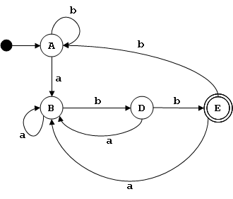

Traductores e Intérpretes UCAB : Minimizacion de Automatas Finitos Deterministas
This page last changed on Jan 14, 2007 by juanca.
El Problema de Minimización
- Puede haber más de un AFD que acepte el mismo lenguaje.
- Entre esos AFD equivalentes, es a menudo útil encontrar el más pequeño, es decir, el AFD con el menor número de estados.
- Esto es especialmente importante cuando se usan AFDs para diseñar circuitos digitales, o para crear analizadores léxicos.
Estados No Alcanzables
- A veces un DFA contiene estados que no pueden ser alcanzados desde el estado inicial.
- Esos estados son fáciles de identificar y pueden ser eliminados sin cambiar el lenguaje aceptado por el DFA.
- El estado 5 no es alcanzable y puede ser eliminado sin alterar el lenguaje aceptado por el DFA.
Estados Equivalentes o Indistinguibles
- Dos estados son equivalentes si el unirlos en uno no altera el lenguaje aceptado por el DFA.
- Unir estados equivalentes es otra forma de simplificar un DFA sin alterar el lenguaje que acepta.
- Dos estados q y r de un autómata M son indistinguibles (escrito q ≡ r) si el autómata que se obtiene de M al hacer q el estado inicial es equivalente al obtenido haciendo r el estado inicial.
- La relación ≡ es una equivalencia (reflexiva, simétrica, y transitiva) y divide el conjunto de estados de un autómata en clases de equivalencia.
- Cada clase de equivalencia corresponde a un estado en el AFD mínimo.
Detectando la Equivalencia
- Para cualquier par de estados q y r, decimos que q ≡n r significa que esos estados no son distinguibles por ninguna cadena de longitud menor o igual a n.
- Dos estados q y r son n-distinguibles si con una cadena de longitud menor o igual a n se llega a un estado final partiendo de q, pero no de partiendo de r, o viceversa.
- Podemos relacionar ≡n con ≡n-1 como sigue: para cualquier par de estados q y r, y un entero n > 0, q ≡n r si y solo si:
- q ≡n-1 r, y
- ∀ a ∈ Σ, δ(q,a) ≡n-1 δ(r,a)
Algoritmo de Minimización
- Eliminar todos los estados no alcanzables.
- Las clases de equivalencias ≡0 son F (el conjunto de estados finales) y Q-F (los estados no finales).
- Calcular las clases de equivalencia ≡n a partir de las de ≡n-1
- Repetir 3 hasta que ≡n sea idéntico a ≡n-1.
- Cada clase de equivalencia resultante corresponde un estado del AFD mínimo.
- Los estados finales en el AFD mínimo son las clases que contengan estados finales del AFD original.
- El estado inicial el AFD mínimo es la clase de equivalencia que contenga al estado inicial del AFD original.
- La tabla de transiciones del AFD mínimo se calcula a partir de la tabla original.
- Para cada entrada δ(qi,a) = qj en la tabla original, se coloca una entrada δ'(C(qi),a) = C(qj) en la tabla del AFD mínimo, donde C(q) es la clase de equivalencia del estado q.
Ejemplos
Ejemplo del libro

Tabla de transiciones δ
| a | b | |
|---|---|---|
| A | B | C |
| B | B | D |
| C | B | C |
| D | B | E |
| E | B | C |
Búsqueda de estados equivalentes:
| ≡0 | ≡1 | ≡2 | ≡3 | ≡ | q' |
|---|---|---|---|---|---|
| E | E | E | E | E | E |
| A B C D |
A B C |
A C |
A C |
A C |
A |
| B | B | B | B | ||
| D | D | D | C | B |
Nueva tabla de transiciones:
| a | b | |
|---|---|---|
| A | B | A |
| B | B | D |
| D | B | E |
| E | B | A |

{kind=link}
{kind=link}